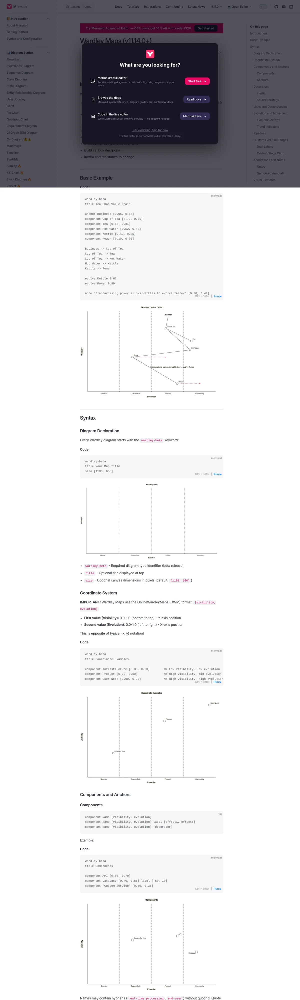

wardley-maps.sgit.ai / Resources / Wardley Maps in Mermaid (`wardley-beta`)
Wardley Maps in Mermaid (wardley-beta)
Tool Live tool
#8 of the ten to read first. The most consequential recent development: maps in git, in pull requests, in documentation, with no tool at all. See the gallery.

What it is
Native Wardley map rendering inside the world's most widely embedded diagramming library — which means maps now render directly in GitHub markdown, GitLab, Notion, Obsidian, Docusaurus, GitBook and anywhere else Mermaid is supported, with no plugin. The syntax deliberately mirrors OWM: component Name [visibility, evolution], anchor Name [v, e], links A -> B (dependency), A +> B (flow), A -.-> B (dashed), evolve Name targetEvo, note "text" [v, e], annotation N,[x,y] "text". Decorators (inertia), (build), (buy), (outsource), (market) mark strategic sourcing. It supports custom evolution stages (evolution Stage1 -> Stage2), pipeline Parent { ... } blocks, and label offsets (component Name [v, e] label [offsetX, offsetY]). Critically, coordinates are [visibility, evolution] — not conventional [x, y] — matching OWM and catching out everyone who assumes otherwise. Implementation is a lightweight regex-based parser plus a custom D3 renderer, shipped with 7 unit tests and 12 E2E visual regression tests. Mark Craddock also maintains https://github.com/tractorjuice/wardley-maps-mermaid (verified), a mirror of Simon Wardley's canonical repository with all 147 maps across 22 domains converted to wardley-beta, reporting 100% component/link retention across 4,905 components and 5,172 links, evolution coordinate drift of exactly 0.0, and mean visibility variance of 0.008 — all 147 parse under Mermaid 11.15.0+.
Limitations
Beta, and the keyword says so — wardley-beta will change when it stabilises, so anything you author today may need a keyword rewrite. Handdrawn/rough mode is explicitly unsupported. The regex-based parser is less rigorous than a real grammar and will be less forgiving of edge cases than OWM's. Renderer is bespoke D3, so it does not inherit Mermaid's usual layout machinery. Not all Mermaid hosts have upgraded — GitHub, GitLab and others pin older Mermaid versions, so wardley-beta may silently fail to render in the exact place you most want it (Joplin, for example, has an open issue just to reach 11.14.0). Verify your host's Mermaid version before promising it works.
The details
| Maintainer | Mermaid project (mermaid-js). The Wardley diagram type was contributed by Mark Craddock (@tractorjuice), resolving long-standing issue #1661 via PR #7526 (commit efe218a). Craddock's write-up: https://medium.com/learn-wardley-mapping/bringing-wardley-maps-to-mermaid-a-journey-from-idea-to-open-source-contribution-8fe5009eafd3 (verified, published 9 November 2025). |
|---|---|
| Started | Shipped in mermaid@11.14.0. ⚠️ The GitHub releases page rendered the date as "1 April" without a year in my fetch; the surrounding sequence (11.13.0 = 9 March, 11.15.0 = 11 May) and Craddock's November 2025 contribution date imply April 2026. Treat the exact release date as approximate and re-verify before publishing. |
| Status, August 2026 | Live and explicitly beta. The docs mark it with a 🔥 and the diagram keyword is literally wardley-beta. Mermaid 11.15.0 is the current line and the maps still parse under it. |
| Licence | Mermaid is MIT. |
| Home | https://mermaid.js.org/syntax/wardley.html |
| Best single link | https://mermaid.js.org/syntax/wardley.html |
Verified 2026-08-23 — status, licence and links checked against the source on that date. The site re-checks every URL it publishes on a schedule and publishes the run, successes and failures alike.
Attribution. "Mermaid (MIT), Wardley map diagram type contributed by Mark Craddock." Docs prose is subject to Mermaid's licensing — quote briefly with attribution; the syntax itself is not copyrightable.